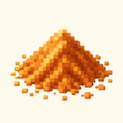
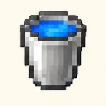
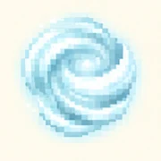

PROJECT DUNE / MINECRAFT REALMS
Equipment
Tagged stillsuits, harvest tools and an inventory ready for the dunes.
THE INVENTORY / EQUIP YOUR EXPEDITION
Every slot
tells a story.
Familiar Minecraft materials. Dune rules, tagged equipment, and a purpose for every piece of your kit.

Tagged stillsuits
Survive Arrakis in a complete faction set.

Spice Harvest Shovel
Dig the deposits. Gather the wealth of worlds.

Melange Spice
Trade spice for Solaris and fulfill contracts.

Finite water
A precious cargo for hidden sietches.

Winged stillsuits
Upgrade with Elytra and 1,000,000 Solaris.
Dune Navigator
Your Nether Star opens the realm menus.

Ordos charge
A tagged Wind Charge with explosive impact.
Imperial Scepter
The operator’s key to the admin GUI.
Select an item to open its manual chapter. Illustrated icons are reference art; in-game equipment uses the models and resource pack described in the guide.